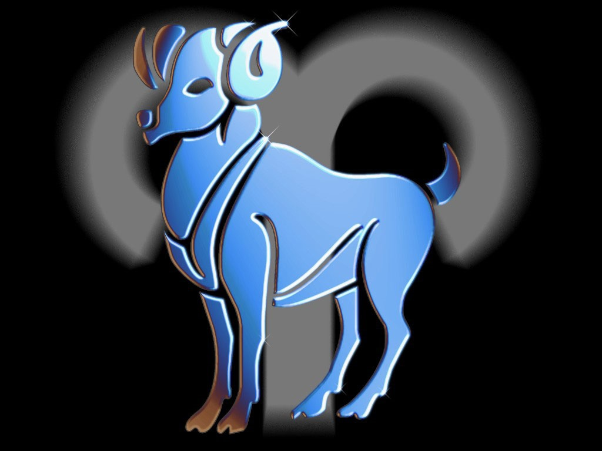
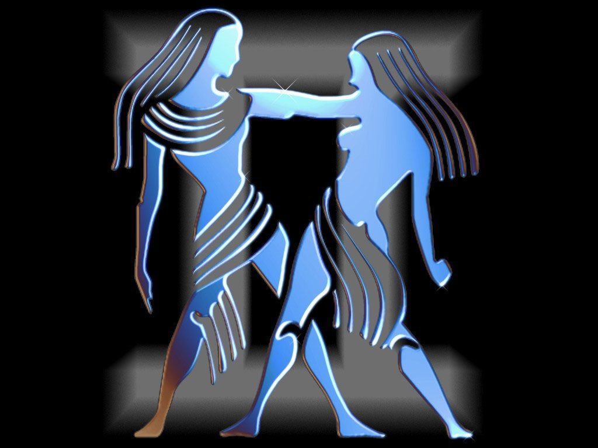
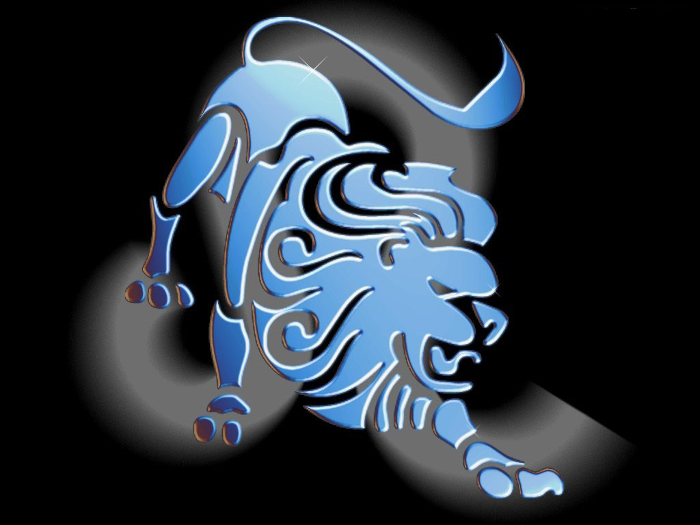
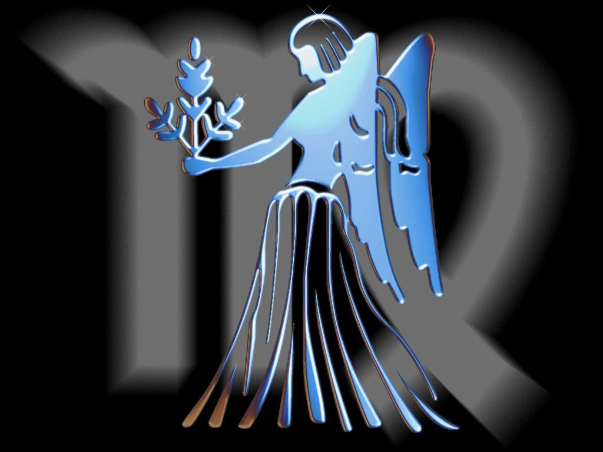
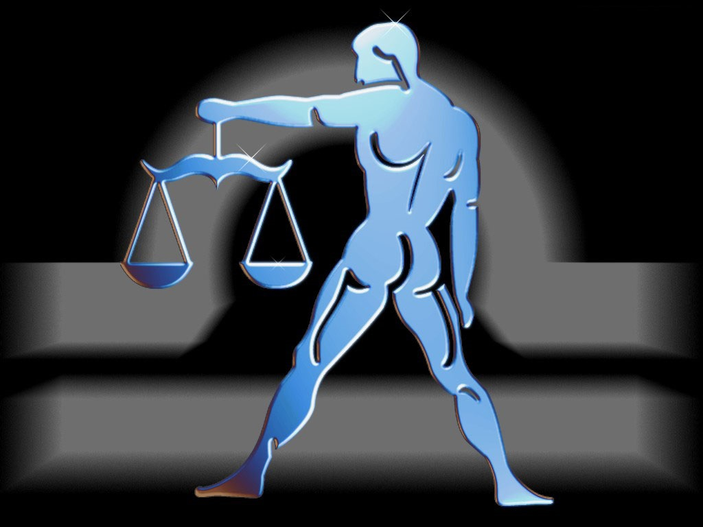
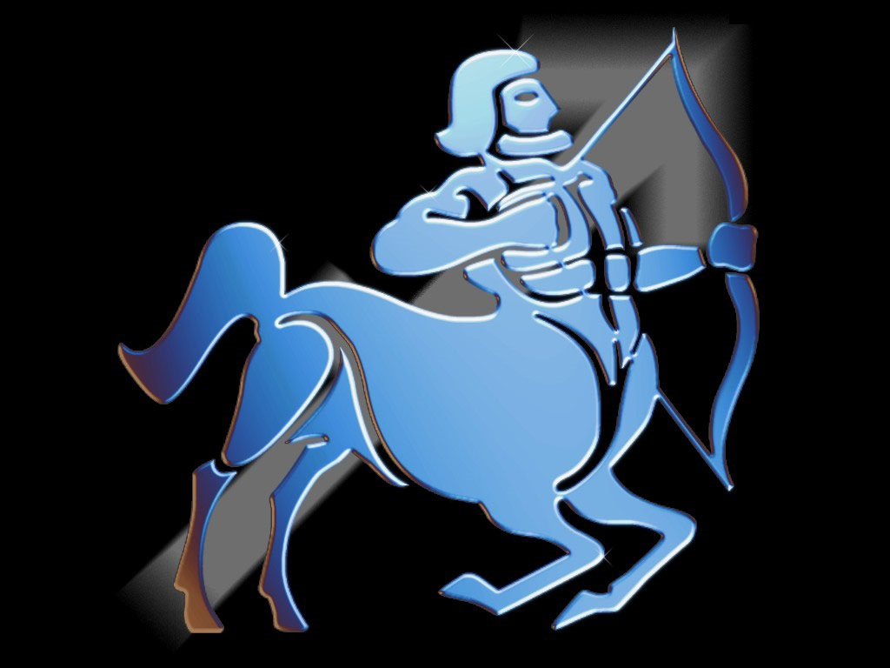
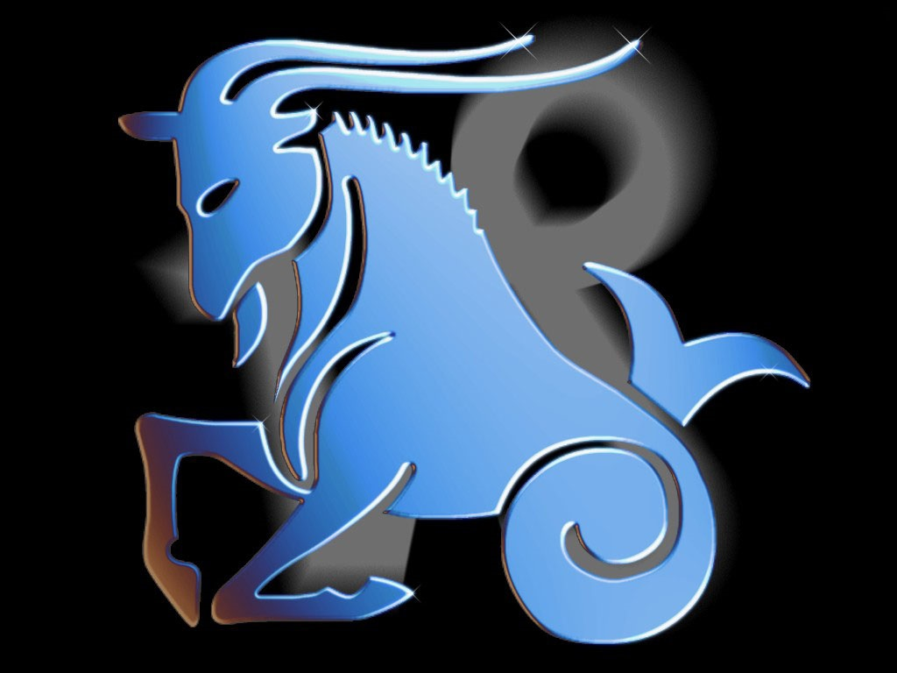
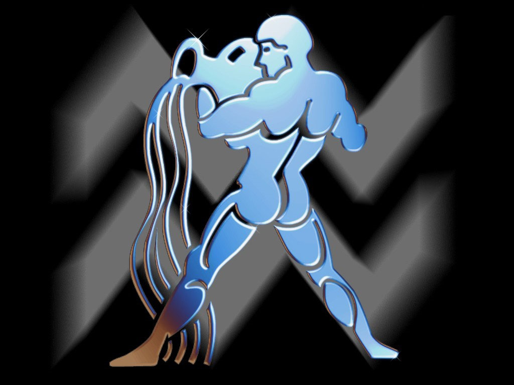

Людина, народжена під цим знаком Зодіаку, завзята, дратівлива, честолюбна й уперта. Бажання наполягти на своєму може перейти в деспотизм. Погано піддається чужій волі, а жар пристрастей не знає меж, Сильна воля не знає меж, діяльний розум штовхає вперед, не побоюючись перешкод.
Під цим знаком народжені: Катерина Медічі, Леонардо да Вінчі, Рафаель, Бах, Декарт, Гойя, Гоголь, Золя, Ван Гог, Бісмарк, Гайдн, Гітлер, Чарлі Чаплін.
Домагається перемоги завдяки працьовитості та незвичайному терпінню. Дуже наполегливий. Не кидає задуманих справ. Рідко слухає поради і може раптом діяти напролом. Його важко вибити з колії, проте гнів його довгий, він не забуває образ. Допитливий і справедливий. Сильна воля, прив'язливий і консервативний у поглядах, ревнивий.
Під цим знаком народжені: Шекспір, Марія Медичі, Делакруа, Катерина II, Кромвель, Робесп'єр, Бальзак, Брамс, Фрейд, Ленін, Трумен.

Найбільш мінливий знак Зодіаку. Люди, народжені під цим сузір'ям, інтелектуальні, часто мають літературний хист, легко пишуть і набувають різноманітних навичок і вмінь. Вони чарівні, люблять пофліртувати, легко здобувають перемоги, але сімейне життя для них у тягар. Позірні протиріччя їхньої натури ілюзорні, вони просто не виносять одноманітності.
Під цим знаком народжені:Паскаль, Оффенбах, Гріг, Шуман, Пушкін, Гоген, Вагнер, Ю. Андропов.
Вірний і відданий у коханні та сімейному житті. У сім'ї вони знаходять комфорт і самовираження. Чуттєві, легко вразливі, воліють більше давати, ніж брати. У роботі чесні та надійні. Не люблять нововведень, дотримуються безлічі умовностей, мають загострену інтуїцію, що доходить до містицизму, але приховують це, оскільки не люблять виділятися з натовпу.
Під цим знаком народжені: Петрарка, Лафонтен, Мазаріні, Рембрант, Рубенс, Жан-Жак Руссо, Глюк, Кафка, М. Шагал.

Звісно, не всі покликані правити імперією та світом, але народжені під цим знаком мають найбільший шанс до лідерства. Леви покликані не тільки керувати, а й любити. Вони глибоко нещасні, якщо перед ними не схиляються. Вони добрі й благородні, щирі у своїх спонуканнях. Світ для Львів - величезна сцена, часто вони наділені драматичними талантами.
Під цим знаком народжені:Наполеон, А. Дюма (батько), Мопассан, Андре Моруа, Клод Дебюссі, Муссоліні, Генрі Форд, Дж. Рокфеллер.

Інтелігентна, спостережлива, здатна мислити логічно. У Дів аналітичний склад розуму. Кредо Діви: "Якщо варто щось робити, то тільки добре". Поважає і цінує ерудицію, має різнобічні інтереси. Надмірно високий критерій "значущості", постійно прагне до досконалості. Багато людей, народжених під цим знаком, досягали високих результатів в обраній діяльності.
Під цим знаком народжені:Давид, Енгр, Готьє, Рішельє, Толстой, Т. Драйзер, Гете, І. Франко, Ісаак Левітан, Лафайєт, Гретта Гарбо, Софі Лорен.

Життям людей, народжених під цим знаком, керує почуття краси, гармонії та справедливості. Завдяки такту, великодушності та врівноваженості, вони завжди перебувають в оточенні людей. Ці люди рідко мають ворогів і чинять сильний вплив на оточуючих. Відповідальні, володіють хорошими діловими якостями.
Під цим знаком народжені: Вергілій, Дідро, Ламартін, Ф. Ліст, Ф. Ніцше, Лермонтов, Вайльд, Махатма Ганді, Ейзенхауер, Юджин О`Ніл, Дж.Гершвін, Сара Бернар, Бріджит Бордо, М. Мастрояні.
Натура крайнощів і протиріч. Найсильніша в ряду сузір'їв Зодіаку. Безжальна і пристрасна. Її можна любити й ненавидіти. Для Скорпіонів не існує перешкод. Вони аналітики і поряд із цим володіють тонкою інтуїцією. Енергійні, майже завжди прагнуть успіху. Саркастичні й мають глибоке, майже містичне розуміння життя. Часто досягають видатних успіхів. Скорпіон - президентський знак: багато президентів США народжені під цим знаком.
Під цим знаком народжені:Ломоносов, Вольтер, Паганіні, Марія Антуаннета, Достоєвський, Клод Моне, М. Кюрі, Роден, Хлєбніков, Тургенєв, Вів'єн Лі, Пікассо, Р. Кеннеді.

Прямі, щирі, чарівні люди. Народжені під цим знаком бувають загальними улюбленцями. Зневажають усілякі обмеження, незалежні. Люблять подорожувати, читати, активні, досягають великих успіхів у роботі.
Під цим знаком народжені:імператриця Єлизавета, Мюссе, Свіфт, Тулуз-Лотрек, Берліоз, Горацій, Марія Стюарт, Разін, Енгельс, Де Голль, Черчилль, Жуков, Карамзін, Луначарський, Плеханов, Кропоткін, Карнегі, Мільтон, Твен, Бетховен, Штраус, Дісней, Гарібальді.

Практичний і пунктуальний. У роботі досягає успіхів у всіх починаннях. Амбітний, Його часто звинувачують у холодності, на ділі він любить глибоко, але насилу висловлює свої почуття. Козероги чесні, прості, вірні та надійні, як сама земля.
Під цим знаком народжені:Жанна д`Арк, Кеплер, Монтеск'є, мадам де Помпадур, Марія дю Плессі, Мольєр, Кіплінг, Жуковський, Шишкін, Перов, Грибоєдов, Міцкевич, Вільсон.

Знак геніїв. Боготворять справедливість, мають широкі інтереси, ніколи нікого не дратують. Їхні ідеї оригінальні, у них гострий розум.
Під цим знаком народжені:Галілей, Едісон, Бернс, Байрон, Моцарт, Шуберт, Лінкольн, Моем, Ж. Верн, Рузвельт, Едгар По, Чарльз Діккенс, Р. Рейган, Б. Єльцин
Мають високорозвинене почуття інтуїції, зі спіритуальним підходом до життя. Подвійні натури: з одного боку чесні й працьовиті, методичні, з іншого - мрійливі та вразливі. Ідеалісти, шукають гармонію, красу і мир. Відчувають глибокі розчарування, зрозумівши, що життя далеке від досконалості. Надають перевагу самотності та спогляданню. Матеріальні цінності для Риби - ніщо порівняно з духовними. Віддають перевагу старому, добре відомому, не люблять нововведень і змін.
Під цим знаком народжені:Мікеланджело, Россіні, Шопен, Гендель, Ейнштейн, Ренуар, Гюго, Карузо, Вашингтон, М. Горбачов, Римський-Корсаков, Елізабет Тейлор, Стейнбек.